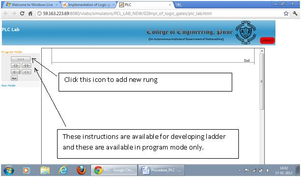
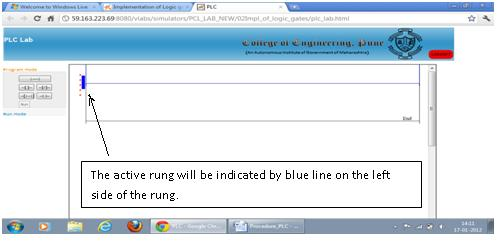
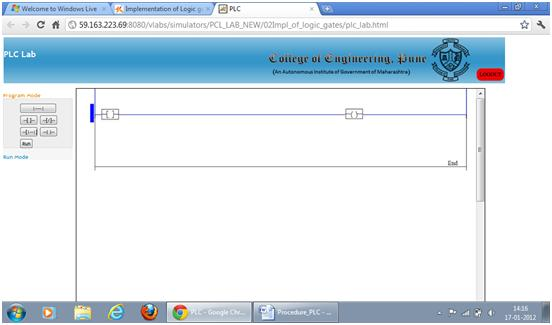
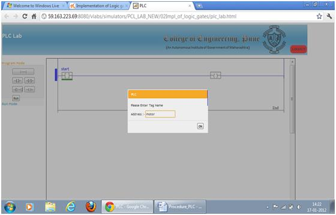
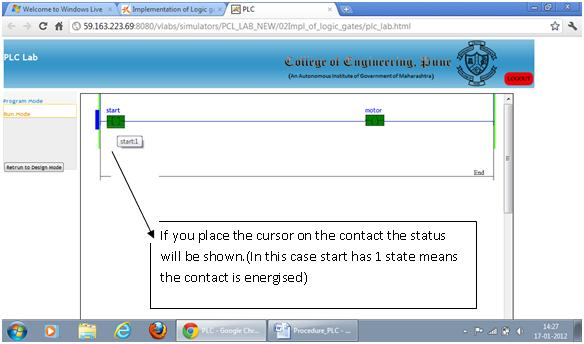
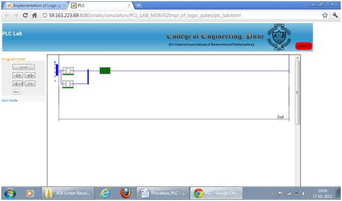

Aim
To understand Simple Ladder program.
Objective:-
- 1. Develop a ladder using standard procedure.
2. Solve the problem using ladder programming.
Q1.
The scan time of PLC depends upon
Processor speed and program length
I/O density
Both the above
Q2.
The programming device must be connected to the controller
When entering the program
When program is running
At all times
Q3.
The ----- will account for the most of the total memory of a given PLC program
User program
Output image table
Input image table
Q4.
While developing the ladder program the contacts are in
Any state (either energised or de-enrgised)
De-energised state
Energised state
Q5.
Which of the following is not a factor in determining the total scan time of a PLC
Program length
Total no. of inputs and outputs
Programming method

Pre-requisites:-
Basics of Digital Electronics and Boolean Algebra:
Digitization is a process where continuous analog signal is converted into a finite number of discrete states. These states are well seperated so that noise does not create errors.
The resulting digital signal has following advantages:
- storage over arbitrary periods of time
flawless retrieval and reproduction of the stored informationflawless transmission of the information
Some information is essentially digital. Hence it is natural to process and manipulate such information using purely digital techniques. Examples are numbers and words.
The drawback to digitization is that a single analog signal (e.g. a voltage which is a function of time, like a stereo signal) needs many discrete states, or bits, in order to give a satisfactory reproduction.

Logic
What can a digital circuit do?
The simplest task we can think of is a combinational type of logic decision.
For example, we can design a digital electronic circuit to make an instant decision based on some information. Here we emphasize “instant” in the decision making process. That means, the process has no time delay.
X = It is a sunny day? Yes
Y = Is it Sunday or holiday? Yes
Action Z = Go for shopping
The rule is Z = X and Y. The circuit is a simple AND gate.
Truth Tables:

Boolean Algebra:
Logic can also be expressed in algebraic form.
e.g.Truth Table for AND gate:

Boolean Algebra Simplification:-
Basic Laws:

Theory
Introduction
Each manufacturer of PLC systems has own style of writing the instructions. Different PLCs has different instruction sets but even some common basic instructions are shared by all the PLCs. All manufacturers give different software packages for programming PLCs. Ladder is most commonly used programming language. Prior to PLCs, relay logic was used in industry. Ladders were developed to mimic or imitate relay logic.
Relay Logic / Instructions
A relay is simple magnetic device which acts as a control switch.
When the switch is on, current will flow through the coil on iron piece. This iron core acts a electromagnet and due to the magnetic field upper contact gets attracted towards lower one and circuit gets completed, allowing current to flow from load.
Ladder Programming
Ladder diagram is popular language of programming the PLCs. Ladder diagram shows the sequence of the logic execution which is presented diagrammatically. In ladder diagram, There are two vertical lines generally called as Phase (positive) or neutral. Rungs which show current flow in horizontal direction are the sequence in which the logic executes. The Analogous to relay, ladder has two main symbols which are contacts and output coil. Generally each rung has inputs (contacts) on left hand side and outputs (coil) on the right hand side. These contacts and coils are called as bits of the relays. Each input and output are individual bit in I/O files. An instruction in ladder instructs PLCs how to respond to the bits in I/O files which are stored in the memory. Input contacts are the condition area, the conditions must be fulfilled to change the status of the output coils.

Most commonly used relay instructions used in PLC programming are as shown in the table below.

Important steps for developing Ladder using Simulator
Please follow the steps so as to understand the procedure for developing ladder logic for various logical gates.
- 1. Prior to starting of the development of ladder diagram following steps needs to be understood:
-
a. Understand the problem statement like test the logic for OR gate, AND Gate etc.
b. Develop the logic on paper and validate the logic by considering various cases
c. Prepare the truth table and test the logic using all valid cases
d. Go to simulator icon and click on the “Simulator” button
e. The PLC simulator will be opened in new window
-
a. The screen shot for the first window will appear like this.

The window will appear like this:

b. Place the contacts as per the requirement by clicking the appropriate contact shown in the left pan of the window. In the example demonstrated below one normally contact and one coil is placed as shown the figure.

C. Double Click on the contact or coil and you can give tag name like “start”, “stop” etc. Please ensure that the tag numbers are true replica of process connections. Similarly give tag name to coil like “motor”, “Lamp” etc. The final ladder will look like this.

d. Please note that the tag names are case sensitive and if you are using them in circuit as bit make sure that the correct tag name appears.
e. Click the Run button available at the left side of the window so the ladder will be ready for running and you can test your logic. Both sides of the rung will become green and this is the indication of run mode. Please not that in run mode the contact are not available so if you want to make changes you will have to go in design/program mode.
f. Double click on the contact and the window for toggling the contact will appear. As you press toggle the state of contact will change. Hence the output contact status will change.

g. Please remember the ladder contacts or the state of the inputs and outputs are always in de-energised state. The de-energised is that state wherein the contacts are in non-active state.
h. You can once again toggle the contact and the output state will change. To add any contact you will have to go in programme mode. Click on the rung and add contacts.
i. To delete any contact or output click on the contact green line below the contact will appear press “delete” the contact will be deleted.
j. To reload the ladder, right click the mouse “Reload ”button will appear and after pressing the button the page will be ready for new ladder development.
k. You can add seven elements in series and 5 elements in parallel.
l. To add element in parallel click on the contact where you wish to add parallel branch. Select the branch and drag it to location where you wish to terminate the branch. The screen will appear as shown below.

m. Repeat the procedure and check the correctness of the logic.
n. Similarly you can check the logic for OR, NOR, and NAND gates. Validate the truth tables and confirm the results.

Q1.
The logical AND function is similar to
Contacts in series
Combination of series- parallel contacts
Contacts in parallel
Q2.
The logical OR function is similar to
Combination of series- parallel contacts
Contacts in series
Contacts in parallel
Q3.
Which of the following logic operators are available in PLC?
AND, OR
NOT
All of the above
Q4.
What is the output of NOR block if any one of the input is high or active or true
1
0
Can’t say
Q5.
What is the output of NAND block if any one of the two inputs is high or active or true
1
0
Can’t say

- 1. What are the different types of logic gates?
2. Draw the truth table for NAND, NOR and XOR gates.
3. How does a relay functions?
4. Explain different relay instructions used in PLC programming.
5. What are the standard setps involved in developing a ladder?

- Gary Dunning, “Introduction Programmable Logic Controllers”, CENGAGE Learning, 3rd Ed., 2006.
- John R. Hackworth, Frederick D. Hackworth Jr., “Programmable Logic Controllers ”, Pearson, 2004.
- W.Bolton, “Programmable Logic Controllers”, Elsevier, 4th Ed., 2006.
- Leach Malvino ," Digital principles and application
- Bouwens," Digital Instrumentation "
- David Bell," Solid state pulse circuits"
- http://plcbasics.net/
- http://www.plcmanual.com/
- http://literature.rockwellautomation.com/
- http://www.automation.siemens.com/